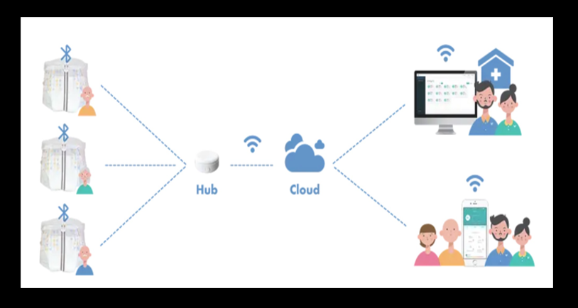

Project

I would like to develop these one day....
- Smart Farm at my vege garden
- Smart Nappy for the elderly and disability people
- Building Wall - E
- Wheelchair can be transformed to 2 limbs
- Develop ONE solution software for Health Care
This is my project proposal CLICK!
I always think WHAT IF..... I would like to make this world more efficient.
Study
These are what I would like to complete & study in future.....
- Master's Public Policy
- Bachelor Computer Science & IT
- Certified Ethical Hacker
- PenTest +
- Certified Network Denfender
- Master's Cybersecurity or Computer Science
Before graduate Bachelor CS / IT, I would like to obtain CEH and PenTest +. I believe this will help me to get my dream job.
I love studying. From this perspective, I think I am in the right industry. Because IT industry is evolving every day and night.
Due to COVID, I deferred my Harvard study. I would like to get back to the campus very soon. If the opportunity comes, I would like to continue to Master's and more research.
Dream Job
This is one of jobs I would like to apply.. CLICK!
I believe CEH, CND, PenTester certifications will help me getting a job in the Cybersecurity RED TEAM or WHITE TEAM.
Dream #1 I would like to get a job while I study. I do not have a lot of experiences in IT or CS yet. However, I would like to work as a Jr. Front-End developer Assistance.
Dream #2 As soon as I graduate this degree, I would like to be able to apply a poistion as a Graduate Full Stack Developer or Graduate Cybersecurity Analyst. From my previous work experience, I would like to start from a bigger company. Because they have better mentoring system and proper graduate program.
Dream #3 With experience, I would like to work as a Cybersecurity / Pentester / Ethical Hancker , espeically in IoT or robots industry.
Dream #4 I am currently developing an software. If it is possible, I would like to launch it by end of this year.